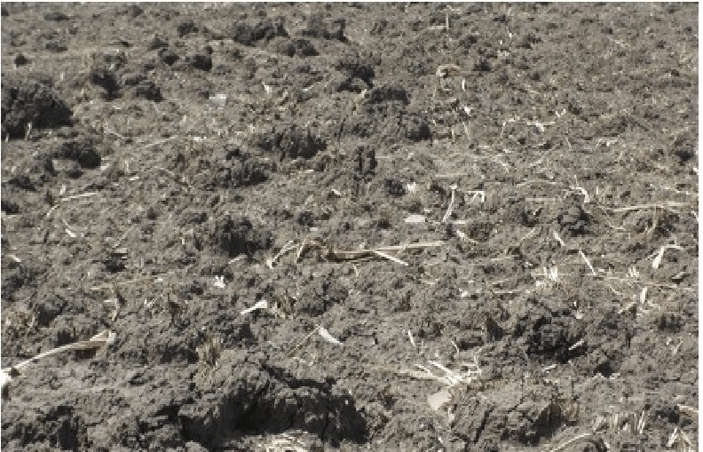

Black Cotton Soil
Black cotton soil, also known as Regur soil or Black soil, is a type of soil that is rich in clay minerals. It gets its name from its dark color and the cotton-like texture it exhibits when dry. Black cotton soil is known for its fertility but can be challenging to work with due to its expansive nature.
Characteristics of Black Cotton Soil
- High clay content
- Retains water well
- Expands when wet and contracts when dry
- Poor drainage
- Prone to cracking during dry seasons
Plants Suitable for Black Cotton Soil
Despite its challenges, black cotton soil can support the growth of various plant species, including:
- Crops: cotton, wheat, sugarcane
- Trees: neem, banyan, tamarind
- Vegetables: okra, eggplant, pigeon pea
Agricultural Practices
Working with black cotton soil requires specific agricultural practices to optimize crop growth. These practices include:
- Proper land preparation with deep plowing
- Adding organic matter to improve soil structure
- Implementing appropriate irrigation techniques to manage waterlogging
- Using mulching to control soil temperature and moisture
Challenges and Management
Black cotton soil poses several challenges for farmers, such as waterlogging, poor drainage, and soil erosion. To mitigate these challenges, various soil management techniques can be employed, including:
- Installing drainage systems
- Applying proper crop rotation practices
- Using contour plowing to prevent erosion
- Implementing terracing on sloping lands
